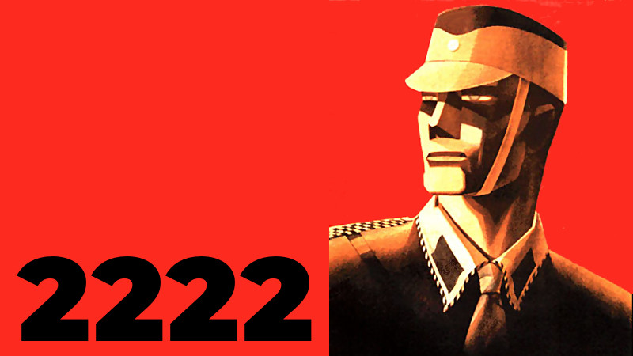

2222 is a dystopian adventure set two hundred years into the future. The world speaks a single language and is ruled by a single totalitarian government which maintains absolute power using a cloned humanoid army controlled by a global satellite system. The satellites also stream government propaganda constantly through the personal devices that citizens must carry with them at all times. Your task is to build a network of allies and, using a range of skills including hacking and coding, to shut the satellites down.